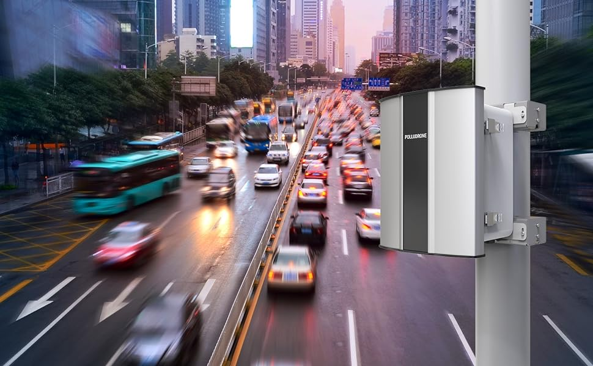
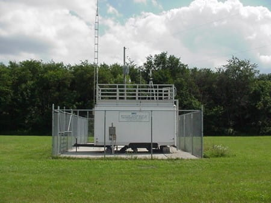

Noida — one of India's fastest-growing industrial and IT hubs in the National Capital Region (NCR) — faces severe air quality challenges. A combination of vehicular exhaust from NH-24 and the Yamuna Expressway, industrial emissions from Noida's Phase I–III industrial sectors, widespread construction activity, and seasonal crop stubble burning from surrounding agricultural belts creates a highly complex pollution profile. The region's landlocked geography and calm winter winds lead to persistent temperature inversions, trapping pollutants and frequently pushing AQI into the "Severe" category between October and February.

The Uttar Pradesh Pollution Control Board (UPPCB) mandates continuous ambient air quality monitoring for industries, construction projects, and commercial zones across Noida, Greater Noida, and the Yamuna Expressway Industrial Development Authority (YEIDA) corridor. Agua Instruments provides UPPCB-compliant AQMS solutions that integrate seamlessly with CPCB's Central Pollution Control Board data portals, ensuring industries meet their statutory reporting obligations without disruption.
Key pollutants monitored in Noida include Suspended Particulate Matter (SPM), PM2.5, PM10, Sulphur Dioxide (SO₂), Nitrogen Oxides (NOₓ), Carbon Monoxide (CO), and Volatile Organic Compounds (VOCs) — all critical indicators in an NCR environment where industrial, vehicular, and agricultural pollution sources overlap and compound each other.
From Sector 58's IT corridor and Sector 62's industrial estates to Greater Noida's Knowledge Park and the Yamuna Expressway industrial belt, our monitoring network design covers Noida's highest-risk zones: traffic hotspots along major expressways, industrial sector peripheries, dense residential townships, and construction-heavy development zones.

Monitoring sites in Noida are strategically chosen near Sector 1's industrial cluster, the DND Flyway corridor, Greater Noida's industrial areas, and the Dadri thermal power plant vicinity — areas where pollution events are frequent and regulatory scrutiny under the Graded Response Action Plan (GRAP) is highest.
Our advanced air quality monitoring sensors and cloud-connected data platforms provide accurate, continuous data collection, enabling Noida's industries and civic bodies to make evidence-based decisions for a cleaner, healthier NCR.
Noida consistently ranks among India's most polluted cities, with PM2.5 levels frequently breaching NAAQS limits during winter months and during paddy stubble burning seasons in October–November. Our comprehensive ambient air quality monitoring stations deploy sensor-based analyzer modules calibrated with Standard Reference Materials, offering Noida's industries a reliable, UPPCB-accepted data stream for compliance reporting, GRAP implementation support, and operational decision-making.
With our continuous AQMS, users in Noida can simultaneously track gas concentrations, particulate matter levels, and environmental parameters in real time. Data is accessible remotely via PC, tablet, or smartphone — critical for plant operators and environmental officers managing multiple sites across the NCR industrial belt spanning Noida, Greater Noida, and Ghaziabad.
Why Choose Agua Instruments for Air Quality Monitoring in Noida?
UPPCB & CPCB Compliant
Our systems are fully compliant with Uttar Pradesh Pollution Control Board and CPCB requirements for continuous ambient air quality monitoring in the NCR region.
Noida-Specific Expertise
With installations across Noida, Greater Noida, and the Yamuna Expressway corridor, our team understands local regulatory requirements, GRAP protocols, and NCR pollution profiles.
Real-Time Data Access
Cloud-connected monitoring dashboards accessible 24/7, providing live AQI data, trend analysis, and automated GRAP-level alerts for exceedance events in the NCR.
Rapid On-Site Support
Our NCR-based service engineers ensure rapid response for calibration, maintenance, and troubleshooting across Noida and Greater Noida — minimising monitoring downtime.
Scalable Solutions
From single-site industrial monitoring to city-wide smart city networks, our systems scale to meet Noida's diverse urban, industrial, and expressway corridor monitoring needs.

Providing data for environmental research and studies across Noida's institutions, IIT Delhi, Jamia Millia Islamia, and NCR universities.
Supporting academic and industrial research on NCR-specific air pollution patterns, including the impact of crop stubble burning and vehicular density on Noida's AQI.

CEMS for factories, manufacturing units, and industrial estates in Noida Sectors 1–11, Ecotech Greater Noida, and the Yamuna Expressway industrial corridor.
Continuous detection of SO₂, NOₓ, CO, and PM — mandatory under UPPCB's online emission monitoring guidelines and GRAP compliance directives.

Real-time AQI monitoring across Noida's residential and commercial zones — Sector 18, Sector 44, Sector 62, Sector 137, and Greater Noida West.
Measurement of ozone (O₃), VOCs, and PM₁₀ / PM₂.₅ for smart city dashboards, GRAP enforcement, and public health advisories during high-pollution episodes.

Ensuring safe air quality in Noida's IT parks, corporate offices, shopping malls, hospitals, and residential high-rises in sectors like 18, 62, and 135.
Detection of CO₂, VOCs, and humidity — critical in Noida's tightly sealed air-conditioned office towers and high-rise residential complexes during severe AQI days.

Deployable mobile units for temporary monitoring during Noida's large-scale events, Diwali festival periods, construction activities, and GRAP emergency response.
Rapid deployment across the NCR for post-stubble-burning impact assessment and real-time pollution hotspot identification along expressways.

Monitoring air quality at Noida's urban fringe areas where agricultural stubble burning and industrial activity from Dadri and Bulandshahr converge.
Detection of ammonia (NH₃), biomass burning markers, and pesticide-related pollutants near Jewar, Dankaur, and Rabupura agricultural zones adjoining Greater Noida.

Assessing vehicle emissions along Noida's NH-24, Yamuna Expressway, DND Flyway, and the upcoming Noida International Airport (Jewar) access corridors.
Monitoring pollution at Noida-Greater Noida Expressway toll plazas, metro depot zones, and logistics hubs for compliance with NGT and EPCA emission norms.

Continuous monitoring in Noida's electronics manufacturing plants, pharmaceutical units, chemical factories, and data centre facilities to protect worker health.
Detection of harmful gases and chemicals in compliance with Uttar Pradesh Factories Act, NGT guidelines, and OSHA occupational safety standards.

Engaging Noida's residential communities in monitoring local air quality around Sectors 78, 137, and Greater Noida West's densely populated townships.
Real-time public AQI data empowering Noida residents to make informed decisions about outdoor activity, school timings, and health precautions during severe pollution events.
| Carbon Monoxide | CO | 0–25 PPM |
| Ozone | O₃ | 0–0.5 PPM |
| Nitrogen Dioxide | NO₂ | 0–0.2 PPM |
| Sulphur Dioxide | SO₂ | 0–10 PPM |
| Nitric Oxide | NO | 0–0.5 PPM |
| VOC | VOC | 0–20 PPM |
| Hydrogen Sulphide | H₂S | 0–10 PPM |
| Carbon Dioxide | CO₂ | 0–2000 PPM |
| Particulate Matter | PM1 | 0–200 μg/m³ |
| Particulate Matter | PM2.5 | 0–2000 μg/m³ |
| Particulate Matter | PM10 | 0–5000 μg/m³ |
| TSP | TSP | 0–5000 μg/m³ |
| Chemiluminescence | Nitrogen Oxides NO / NO₂ / NOₓ |
| UV Photometry | Ozone O₃ |
| UV Fluorescence | Sulphur Dioxide SO₂ and Hydrogen Sulphide H₂S |
| NDIR Gas Filter Correlation | Carbon Monoxide CO · Benzene / Toluene / Ethylbenzene / Xylene (BTX) |
| Nephelometry | Particulate Matter (PM1, PM2.5, PM10 and TSP) |
| Laser Light Scattering | PM10 and PM2.5 simultaneous |